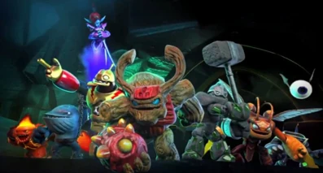
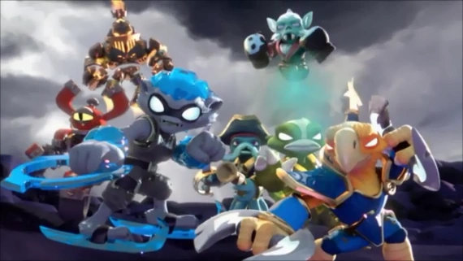
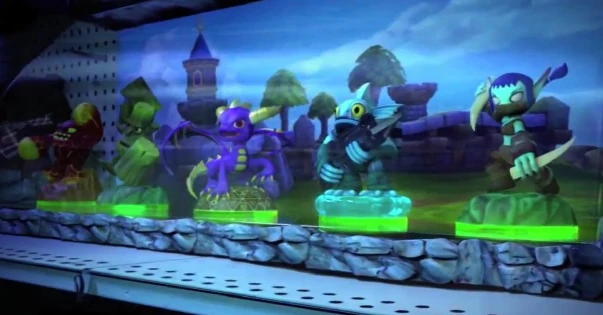
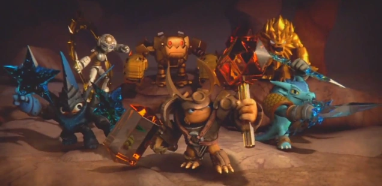
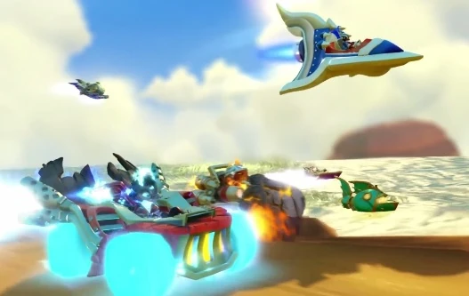
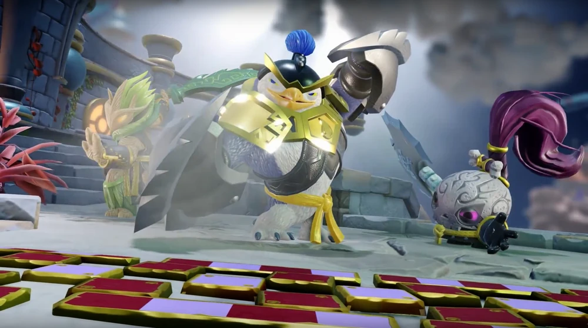

1.La caída de los Arkeyans

Es va dir que els Gegants eren els Skylanders originals que es van unir per a lluitar contra un imperi malvat. Fa deu mil anys, els Gegants van lluitar contra els tirans Arkeyans per la llibertat de Skylands. En una batalla final contra els Arkeyans, els Gegants van ser disparats a la Terra com una forma de sacrifici, on han estat enterrats baix terra des de llavors. A mesura que passaven els anys, aquests enormes Skylanders aviat van ser considerats com un mite.
Hi ha hagut centenars de Skylanders en el passat, i avui dia, hi ha dotzenes, mantenint el seu paper en la protecció de Skylands de les forces de la foscor. A pesar que els Skylanders venen de diferents regnes i mons, cadascun sap que és el seu destí usar les seves habilitats per a protegir Skylands.
Durant generacions, els Skylanders van treballar amb els Mestres del Portal per a mantenir la pau i l'equilibri en el seu món, lluitant contra les forces de la foscor i protegint el Nucli de Llum. Els Skylanders tenen un vincle indestructible amb els seus Mestres del Portal. Encara que no són servents, els Skylanders van triar servir al seu Mestre del Portal i fer-lo amb ansietat. També són amics de les Fades, sobretot perquè les fades poden convertir el tresor en màgia d'actualització que li dona als Skylanders nous poders i habilitats, incloent-hi l'alè fresc.
2.Erupción Rompenubes

Fa cent anys, un grup de Skylanders havia protegit les Illes Rompenubes i el seu volcà màgic que regenera la màgia en tots Skylands cada cent anys. Durant el cim de l'erupció anterior, una presència maligna va amenaçar als Elementals Antics mentre realitzaven el ritual que fa que el volcà entri en erupció i difongui la màgia per tot el món. Aquesta força sinistra va convocar a un eixam d'Escurçons de foc per a atacar als Elementals, però l'equip de Skylanders va poder derrotar-los en una batalla èpica. No obstant això, aquests Skylanders van ser atrapats en l'erupció del volcà i van ser bandejats a la Terra, però no abans que les energies màgiques de l'erupció els concedissin l'habilitat d'intercanviar meitats, convertint-los així en un equip especial de Skylanders conegut com la SWAP Force.
3.La aventura de un dragón morado
Els moderns Skylanders van ser conduïts prèviament pel veterà mestre del portal, el Mestre Eon, fins que La Foscor va tornar un dia. Veient l'amenaça, Eon va cridar als Skylanders, incloent a Spyro el Drac, per a preparar-se per a la batalla mentre el malvat Maestro del Portal, Kaos, tornava del seu exili per a intentar destruir el Nucli de Llum i governar a Skylands com el seu emperador. Pel comando de Eon, els Skylanders van lluitar valerosament contra les forces fosques de Kaos, però com ells guanyaven la lluita, Kaos va deixar anar la seva Hidra, que va deslligar amb èxit el Nucli de Llum en una explosió devastadora.
Poc després de la destrucció del Nucli, els Skylanders que el van custodiar van ser bandejats de Skylands a la Terra, on van ser convertits en joguines com a resultat que la Terra no tenia màgia, i van esperar que un nou Maestro del portal els trobés. Encara que el Mestre Eó va sobreviure a la destrucció del Nucli de Llum, es va convertir en un esperit i no va poder lluitar contra Kaos i La Foscor, deixant el deure de conduir als Skylanders al nou i jove Maestro del Portal. Després que el Mestre Eon va reclutar el nou Maestro del Portal, els Skylanders van fer el seu sorprenent retorn a Skylands, arribant a les Illes Devastades per a salvar als seus habitants Mabu d'un monstruós tornado que estava devastant el seu poble. Els herois van començar la seva cerca per a salvar Skylands de la tirania de Kaos amb el nou Maestro del Portal guiant-los.
Després de la derrota de Kaos en el seu cau, tres dels Skylanders (Spyro, Gill Grunt i Trigger Happy) van tornar a les Ruïnes amb Kaos captiu i Hugo més tard va bandejar al malvat Maestro del Portal a la Terra on va ser encongit i convertit en joguina. No obstant això, el mestre Eon va insinuar al nou Maestro del Portal que el viatge amb els seus Skylanders era només el començament.
4.El regreso de los Gigantes

Els Skylanders segueixen atrapats en la Terra, congelats com a joguines. Alguns d'ells han estat recollits i col·locats dins de les pantalles d'una botiga de joguines anomenada Super Toy Planet, on també s'allotjava la forma de joguina de Kaos. No obstant això, Kaos es va alliberar de la seva forma estàtua a causa del seu estat de Maestro del Portal i els skylanders congelats Skylanders dins d'una pantalla de joguina a prop no podia fer res més a fer amenaces ocioses a Kaos com el malvat Maestro del Portal es va burlar d'ells abans de tornar a Skylands amb l'ús d'un Portal de Poder.
Mentrestant, el nou Maestro del Portal havia recuperat un Gegant, i el Mestre Eon els va buscar per a salvar a Skylands d'una nova amenaça. Els Skylanders i els Gegants van prevaler a detenir a Kaos del governant Skylands amb un exèrcit de robots Arkeyans.
5.El Trap Team

Quan un grup de vilans més notoris anomenats els Doom Raiders van terroritzar Skylands sense misericòrdia, un grup de Skylanders anomenat el Trap Team va ser anomenat per a rastrejar a aquests malvats i per a posar una parada als seus plans. Aquests Skylanders van manejar les llegendàries armes de Traptanium que els van permetre derrotar als Doom Raiders i empresonar-los en la fortalesa més impenetrable anomenada Presó Rompenubes.
No obstant això, molts anys més tard, Kaos va destruir la presó, que no sols va alliberar els vilans, sinó que també va llançar l'equip del parany lluny de Skylands a la terra on van ser trobats pels nous amo del portal. Arran de l'explosió de la presó Rompenubes, la fundació de Skylands es va fracturar, deslligant dos nous elements: la llum pura i la foscor completa.
6.Los SuperChargers

Kaos va utilitzar el poder de La Foscor per a crear una gran màquina de destrucció anomenada El Sky Eater. Aquesta construcció massiva va desconnectar la xarxa del portal entre Skylands i altres mons incloent la Terra, impedint en primer lloc que el Mestre del Portal i els seus Skylanders arribessin a Skylands. Per a combatre aquesta amenaça, un equip especial de Skylanders, conegut com els SuperChargers, va ser acoblat. Pilotant vehicles accionats pels llegendaris Motors de l'esquerda, aquests Skylanders van poder viatjar a través de portals entre Skylands i mons més enllà.
7.Los Senseis y los Imaginators

Els Senseis són mestres de diferents estils de lluita i tècniques de batalla secretes. Durant molts anys, havia estat la seva missió explorar els llocs més allunyats de Skylands, a la recerca de possibles herois per a entrenar en la lluita contra el mal.
No obstant això, amb Kaos deslligant Màgia mental per a crear Doomlanders, el Mestre Eon ha convocat als Senseis per a tornar i portar una nova generació d'herois en la batalla, els Imaginators.
Els Imaginadores són creats per la imaginació dels Mestres del Portal, usant Cristalls de Creació alineats de manera elemental. Després d'haver nascut d'una constel·lació que representa una classe de batalla, les seves aparences i habilitats poden ser canviades de moltes maneres.
Els seus poders estan principalment determinats per la seva classe, amb només una petita selecció d'habilitats elementals. Els imaginators són excepcionalment poderosos contra els Doomlanders, i cada Sensei els ajuda a desenvolupar encara més la seva fortalesa.